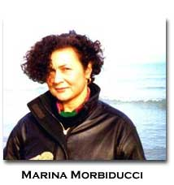
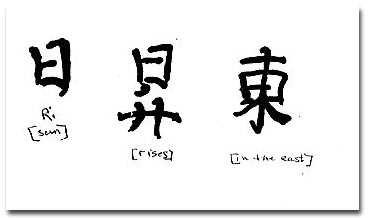

|
“Oriental
Peaceful Penetration”: Revisited by Marina Morbiducci
They say (Picasso among them) that she looked like a Roman emperor. There is, in this assimilation, the shared acknowledgment of Gertrude Stein’s power and authority. But Djuna Barnes—and, later on, Jo Davidson and Picabia —will portray her as an Oriental icon. Another kind of charisma. How is that possible? How do the two opposite attributions cope with each other? Is this double representation of Eastern peacefulness and Western assertiveness purely accidental? Or subtly intentional? And if so, whose intention does it correspond to? In what direction does it take us? It is likely that the choice of many artists close to Gertrude Stein to represent her in an Oriental guise, derives from Stein’s willingness to appear not only open, but eager to incorporate the Oriental posture and frame of mind. There are certain biographical elements that may support this observation: for instance, her friendship (in the 1890s) with the Boston Orientalist Thomas Whittemore, who “when a great collection of Chinese paintings arrived in Boston at the Museum
[…] had been given the direction of their unpacking and classification […] [He] asked Gertrude to share. It was a pleasure that remained vivid in her memory…” (A.B. Toklas, What Is Remembered, 50). In the same book, Alice again reports about Gertrude’s “lapis lazuli Chinese mandarin chain” (44) which made her other jewels “insignificant”; and then again, there is a letter dated December 22nd, 1895, from Leo Stein to Gertrude, in which he sends her his address in Kyoto, one of the stops during his tour of several months with Hutchins Hapgood in the Far-East. The address is naturally in Chinese ideogrammatic characters. Finally, in this speculative list, when describing her Chinese servant, Trac, Gertrude hints at his “different” modalities of relating to external things and accidents, referring in particular to his peculiar way of conceiving “counting”—being a Chinaman—“with pebbles”:
This peculiar way of “counting” is strictly connected to the Eastern notion of “time”, and, on its turn, to the Steinian form of writing:
In fact, this links to her previous statement in the same lecture:
In her writings, Stein made explicit declarations of engagement with Eastern modalities and practices. Let’s consider again, for instance, the mature What Are Master-pieces (1922-36), where the issue of an East/West confrontation of aesthetic and existential categories, is diffusely faced (see Shawn H. Alfrey’s essay “ ‘Oriental Peaceful Penetration’: Gertrude Stein and the End of Europe”, 1997). Alfray approaches the question of Stein’s interest in the East, starting from geographical and sociological considerations, to eventually touch on some deeper aesthetic consequences visible in her ideology of writing, definable as “Oriental peaceful penetration”. Actually, Alfray is inclined to present Stein’s favourable bias towards the Eastern culture, not only as the expression of an idiosyncratic form of Orientalism, different from the standard one then in fashion, but also as the very cipher of her peculiar kind of Modernism: more than inspiration, a form of affiliation. “…to an American particularly a Pacific Coast American the Orient was not a romance not necessarily an adventure, it was something different altogether”, Stein herself claims in What Are Master-pieces (66). Alfrey goes on to say that “[Stein’s] writing of this period [1934] is obviously unconcerned with the accurate definition and representation of the Orient; it seems alternately a loose confederation of place names or even a state of being. […] China appears as a figure not merely for the exotic or esoteric, but for all of knowledge” (406-7); “Oriental knowledge, for Stein, disrupts the settled forms of western. thought, giving support to her literary experiments” (409). We are confronted with a series of dense statements or explanations, emerging from within the very making, occurring, shaping, of Stein’s writing. ° For Stein, writing is not a matter of description—placing conventional signs of referential signification in space—but of enactment —giving the processual quality of entities existing in time. Words, therefore, are like the pebbles that Oriental people use to count. Counting and thinking—psychologists, mathematicians, linguists all agree—are akin. Language, in order to become the closest and most adherent expression of thinking—which is Stein’s most urgent goal—had better follow the rules of original counting, and narrative, the same sequencing, in terms of time, of the mind.
° Nobody can argue that this all-invading temporal dimension is not carried over in language by the agency of repetition. How could it not be? Repetition is the only linguistic device capable of rendering the dynamic quality of succession and process on the page. But there is more in it, in repetition in Stein, I mean, than just time. The parallel presence of repetition with the unrolling of time, is correct, but, in my opinion, this is only the first degree of truth in Stein’s use of repetition. We can see more in it, when starting from the temporal notion of repetition, she reaches the punctual and perforating dimension of “insistence”: the initial stage, its medium for asserting the existing, repetition; but the more perfect degree, all the way through time, but beyond time, the unmovability of the One, insistence. This is why Stein couples the terms of repetition and insistence, in her famous lecture “Portraits and Repetition”:
By reading this passage, one might think that actually the difference between repetition and insistence is only a matter of diversified emphasis, and that Stein simply reproduces the Oriental postulate that you will never see the same water of a river flow under your eyes. Stein wants to pinpoint the diversifications that time is able to exert, with the simple fact of its ceaseless, on-rushing motion, but, in the end, what she primarily aims at, is to capture the essence of being, the “entity”, “the being being there”. And she wants to do this in, with, via, language. To reassert the presence of being in our linguistic codes of signification we can only use repetition, because our system of linguistic representation is very imperfect and, let’s say, logocentric, but divided, not immanently “logological”. With the Chinese Written Character, the way Fenollosa puts it, we have something different, another realm of existence in language. ° Here we come to the crucial point of my talk: the ideogrammatic way of figuration retains in itself, at the same time, the same temporal texture and immanent presence of being that Gertrude Stein wanted to reach with her use of repetition, or, insistence. It is Fenollosa, with his famous seminal essay, written in 1908, prefaced by Pound in 1918, who opens the way to this interpretation. Gertrude Stein might not have been openly aware of the importance of The Chinese Written Character As a Medium for Poetry, but certainly as a student at Harvard when Fenollosa was spreading the news —he had also been made Oriental art curator at the Boston Museum of Fine Arts—she breathed the same air of Eastern thought. There are many passages in Fenollosa’s essay that would be interesting to reread in Steinian terms. He claims to be involved, in that essay, with poetry, not language, “yet the roots of poetry are in language” (Fenollosa, 13). He inquires of “a language so alien in form to ours as is Chinese in its written character” asking “in what sense can verse, written in terms of visible hieroglyphics, be reckoned true poetry?” (Fenollosa, 14). The ideogram and Stein’s repetition are carriers, in different ways, of the same modality of signification. Fenollosa defines poetry a “time art”, and with this remark favours my interpretation, which can be exemplified by these two syllogistic equations: 1- poetry is time / the ideogram is poetry / the ideogram is time = 2- poetry is time / repetition is time / repetition is poetry. The ideogram incorporates more than one concept in one only character, and for this becomes poetry; poetry, as a form of “time art”, in the Chinese character simultaneously combines agent, action, place and time, modality and tone, that is, achieves a density of meaning which gives the unity of difference and multiplicity. According to Fenollosa, this is the very essence of poetry, and if only Western men were able to capture the same process of instantaneous signification as the Chinese character, poetry would always arise naturally. At the end of his essay, he provides, as an example, the following string of ideograms: 
The line is very simple, translated into English it becomes: The sun rises in the East. But in this literal translation much of its intrinsic poetry is missing; in fact, the process of accumulation of concepts which gives result to the meaning of the word “East”, for example, is completely lost. “East” in Chinese is expressed by the symbolized figure of the sun which gets entangled in the branches of a tree; the verb “rises” presents another homology: “the sun is above the horizon, but beyond that the single upright line is like the growing trunk-line of the tree-sign” (Fenollosa, 34). The first word, “sun”, is represented by the single radical “sun” = “Rì”. Analyzing the three characters of this line, we note that each linguistic unit, each ideogram, contains the presence of the radical representing “sun”: in “sun”, because it is the agent; in “rises”, because the verb “to rise” has embodied in itself, etymologically speaking, the idea of the “sun” growing upright from the trunk of a tree; and in “East”, because it is located and perceived as the place where the “sun” rises and, in so doing, gets entangled in the branches of a tree. It is a line which carries intrinsic poetic qualities: it provides the simultaneous presence of different layers of meaning and dramatic power. But in order to achieve this, if we observe the recurring presence of the radical “Rì” (in the figure of a rectangle cut across in the middle) [attach the drawing of the radical, a reapeated image, “the sun”, encl. 5] meant to signify the word “sun”, we will say that there is repetition, without it being perceived as real repetition, therefore there will be rather “insistence”. Each ideogram is different and yet has a degree of similarity, all three incapsulating the same radical meaning “sun”, in combination with the other pictographically signifying elements in each single ideogram, where the performance of the action takes place. The Chinese ideogram is a powerful and compact source of meaning and it uses repetition—a sort of disguised repetition—as its natural resource. Gertrude Stein, with the same urge of dense and multilayered statements of existence, deconstructs her only inherited Western system of linguistic representation, and makes it new, even forcing it to its extreme ungrammaticality and loss of meaning, often at the brink of incantatory nonsense; and when she has reduced it to pieces (making us aware of the presence of radicals, suffixes, prefixes, etc.), she builds it up anew in her semantic architectures, primarily based on a form of repetition which is not such because it doesn’t want to be simple repetition, but rather, a way of insisting on separate units of meaning. Each repeated word in Stein is a different one, though alike, just as the line “The sun rises in the East” contains “sun” three times, but hides its presence in the branches of a tree.
Works Cited —Alfrey, H. Shawn. “ ‘Oriental Peaceful Penetration’: Gertrude Stein and the End of Europe”, in The Massachusetts Review. Autumn 1997, pp. 405-416. —Fenollosa, Ernest. The Chinese Written Character as a Medium for Poetry, in The Poetics of the New American Poetry, Donald Allen and Warren Tallman eds. New York: Grove Press, 1973. Italian edition: L’ideogramma cinese come mezzo di poesia. (translated by Mary de Rachewiltz). Milano: Scheiwiller, 1960. —Toklas, Alice B. What Is Remembered. San Francisco: North Point Press, 1985. —Stein, Gertrude. What Are Master-pieces. Los Angeles: Conference Press, 1940. Lectures in America. New York: Randon House, 1935. Vintage Books, 1975. BIO: Marina Morbiducci is the Italian translator and editor (with E. G. Lynch) of Tender Buttons (Liberilibri, 1989). She has also edited, with Annalisa Goldoni, an anthology on the Black Mountain Poets and Robert Creeley. She coordinates the “Translation wor(k)ship” sessions in the literary translation journal Traduttologia, University of Pescara. She is completing her Ph.D dissertation on “Stein in Tempo”. go to this issue's table of contents
| ||||||||||||||||||||||||||